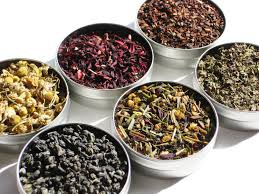
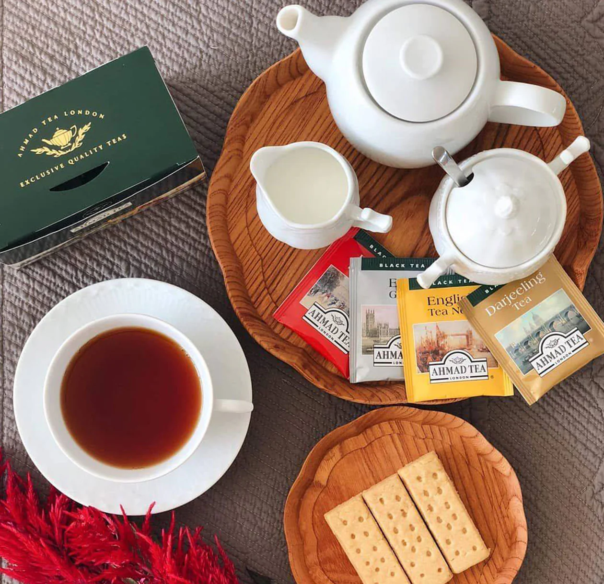

About Us
Whether you're a seasoned tea lover or just beginning your journey, we offer a world of flavors that will delight your senses. From rare, exotic teas sourced from the far corners of the globe to beloved classics steeped in tradition, we have something for every palate.Explore our collection, discover new favorites, and enjoy the perfect brew with Julie’s Teas. Savor the experience today!
Exotic Teas
Julies Teas proudly offers a curated selection of rare and exotic teas from around the world. Each blend has been carefully sourced from the finest tea-growing regions, bringing you a taste of adventure with every cup. Explore our unique collection, which includes:
|  |
|
Our Timeless Tea Favorites
At Julie’s Teas, we believe some classics never go out of style. Our popular tea collection features familiar favorites that have stood the test of time, bringing comfort and enjoyment with every sip. From rich, full-bodied black teas to soothing herbal blends, these timeless teas are perfect for any occasion:
|
 |